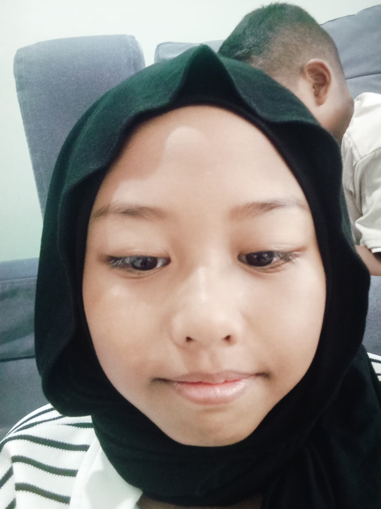
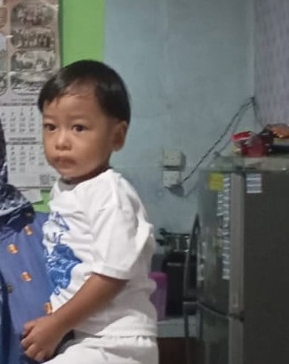

ちち
Chichi
AyahA LITTLE INTRODUCTION
A closer look at my family.
わたしのかぞく
01 — FAMILY TREE
かぞくのこうせい · Kazoku no Kousei
Chichi
AyahHaha
IbuWatashi
Anak pertama
Imouto
Adik perempuanOtouto
Adik laki-laki pertama
Otouto
Adik laki-laki kedua02 — FAMILY STORY
Watashi no Kazoku · Narasi Keluarga
これはわたしのかぞくです。
Kore wa watashi no kazoku desu.
Ini adalah keluarga saya.
わたしのかぞくはろくにんです。
Watashi no kazoku wa rokunin desu.
Keluarga saya berjumlah enam orang.
かぞくはちちとははとわたしといもうととおとうとふたりです。
Kazoku wa chichi to haha to watashi to imouto to otouto futari desu.
Keluarga saya terdiri dari ayah, ibu, saya, satu adik perempuan, dan dua adik laki-laki.
わたしはごにんきょうだいです。
Watashi wa gonin kyoudai desu.
Saya bersaudara lima orang.
いもうととおとうとふたりとわたしです。
Imouto to otouto futari to watashi desu.
Adik perempuan, dua adik laki-laki, dan saya.
わたしはいちばんうえです。
Watashi wa ichiban ue desu.
Saya adalah anak paling tua.
03 — MEET THE FAMILY
Perkenalan Anggota Keluarga
ちちはしろいながそでのシャツをきています。
Chichi wa shiroi nagasode no shatsu o kite imasu.
Ayah memakai kemeja lengan panjang berwarna putih.
むねとかたにこいいろのアクセントがあります。
Mune to kata ni koi iro no akusento ga arimasu.
Ada aksen warna gelap di bagian dada dan pundak.
ちちははたらきものです。
Chichi wa hatarakimono desu.
Ayah adalah orang yang pekerja keras.
おんがくをきくことがすきです。
Ongaku o kiku koto ga suki desu.
Ayah suka mendengarkan musik.
けちではありません。
Kechi dewa arimasen.
Ayah tidak pelit.
こづかいをくれます。
Kozukai o kuremasu.
Ayah suka memberi uang saku.
はははこいいろのふくをきています。
Haha wa koi iro no fuku o kite imasu.
Ibu memakai baju berwarna gelap.
ちゃいろとクリームいろのもようがあるヒジャブをつけています。
Chairo to kuriimu iro no moyou ga aru hijabu o tsukete imasu.
Ibu memakai jilbab bermotif dengan nuansa warna cokelat krem.
はははがまんづよくてやさしいです。
Haha wa gamanzuyokute yasashii desu.
Ibu penyabar dan baik hati.
おかしをつくることがすきです。
Okashi o tsukuru koto ga suki desu.
Ibu suka membuat kue.
わたしもははといっしょにおかしをつくることがすきです。
Watashi mo haha to issho ni okashi o tsukuru koto ga suki desu.
Saya juga suka membuat kue bersama Ibu.
わたしはネイビーいろのふくとヒジャブをつけています。
Watashi wa neibii iro no fuku to hijabu o tsukete imasu.
Saya memakai pakaian dan jilbab berwarna navy.
わたしはやさしいです。
Watashi wa yasashii desu.
Saya memiliki sifat penyayang.
いつもおとうとやいもうとのめんどうをみます。
Itsumo otouto ya imouto no mendou o mimasu.
Saya selalu menjaga adik-adik.
おんがくをきくことがすきです。
Ongaku o kiku koto ga suki desu.
Saya suka mendengarkan musik.
えいがやテレビをみることがすきです。
Eiga ya terebi o miru koto ga suki desu.
Saya suka menonton film dan televisi.
あそぶことがすきです。
Asobu koto ga suki desu.
Saya suka bermain.
いもうとはこいみどりいろのヒジャブをつけています。
Imouto wa koi midori iro no hijabu o tsukete imasu.
Adik perempuan memakai jilbab berwarna hijau tua.
いもうとはそうぞうりょくがあります。
Imouto wa souzouryoku ga arimasu.
Adik perempuan saya kreatif.
えをかくことがすきです。
E o kaku koto ga suki desu.
Ia suka menggambar.
じぶんでおもちゃをつくることもすきです。
Jibun de omocha o tsukuru koto mo suki desu.
Ia juga suka membuat mainan sendiri.
ひとりめのおとうとはしろいシャツとあかいネクタイのせいふくをきています。
Hitorime no otouto wa shiroi shatsu to akai nekutai no seifuku o kite imasu.
Adik laki-laki pertama memakai seragam sekolah berupa kemeja putih dan dasi merah.
あそびにいくことがすきです。
Asobi ni iku koto ga suki desu.
Ia suka pergi bermain.
ジョギングがすきです。
Jogingu ga suki desu.
Ia suka jogging.
じてんしゃにのることもすきです。
Jitensha ni noru koto mo suki desu.
Ia juga suka bersepeda.
ふたりめのおとうとはまえにあおいもようがあるしろいシャツをきています。
Futarime no otouto wa mae ni aoi moyou ga aru shiroi shatsu o kite imasu.
Adik laki-laki kedua memakai kaus putih dengan motif biru di bagian depan.
なんでもたべることがすきです。
Nandemo taberu koto ga suki desu.
Ia suka makan apa saja.
テレビをみることがすきです。
Terebi o miru koto ga suki desu.
Ia suka menonton TV.
おもちゃをたくさんもっています。
Omocha o takusan motte imasu.
Ia memiliki banyak mainan.